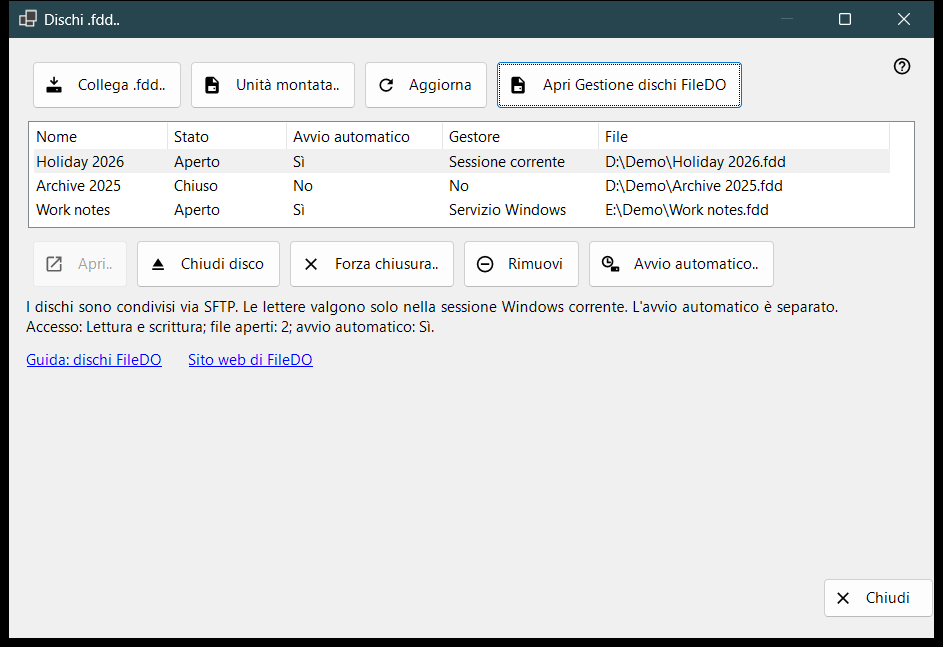
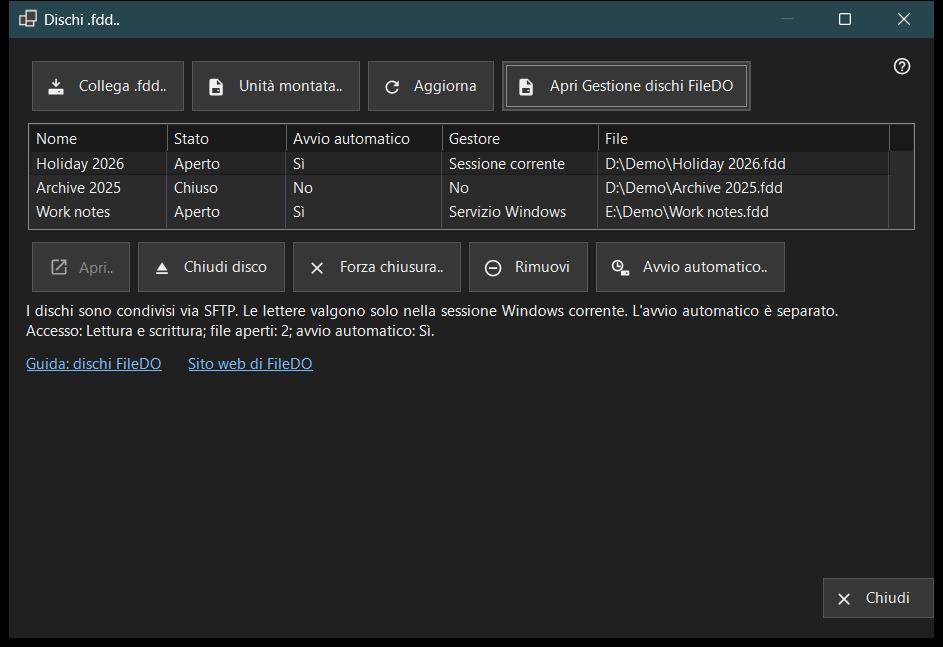

Dischi .fdd
Scopo
Elenca i dischi .fdd di FileDO che questo PC condivide tramite SFTP e offre i comandi di uso quotidiano: collegare un disco, aprirlo o chiuderlo, interromperne la condivisione e decidere se si apre insieme al server. Si apre dalla voce «Dischi .fdd..» del menu di aggiunta nella finestra principale di Share Manager.


In questo ordine
- Premi «Collega .fdd..», scegli il file .fdd e conferma la finestra delle opzioni.
- Seleziona il disco nell'elenco; la riga sotto l'elenco mostra la modalità di accesso, i file aperti e l'avvio automatico.
- Usa «Apri..» per un disco chiuso, «Chiudi disco» per uno aperto oppure «Avvio automatico..» per cambiare l'apertura automatica.
- Premi «Aggiorna» per rileggere lo stato; la finestra lo rilegge da sola anche ogni 10 secondi.
- Premi «Chiudi» per uscire.
Gli elementi
Elenco dei dischi
Ogni riga è un disco condiviso: Nome, Stato (Aperto, Apertura, Chiusura, Chiuso, Bloccato, Errore o Sconosciuto), Avvio automatico, Gestore e il percorso del file .fdd (colonna «File»). Gestore indica chi tiene aperto il disco: Servizio Windows, Sessione corrente oppure No quando nessuno lo fa. Passa il puntatore su una riga per vedere il percorso completo. La prima riga viene selezionata da sola e la riga sotto l'elenco mostra il suo accesso (Sola lettura o Lettura e scrittura), il numero di file aperti e l'avvio automatico. Se il servizio di condivisione non può condividere dischi, l'elenco e i pulsanti dei comandi sono nascosti e quella riga ne indica il motivo; se il disco è montato da FileDO stesso, compare il collegamento «Apri Gestione dischi FileDO».
Collega .fdd..
Scegli un file .fdd e registralo per la condivisione. La finestra delle opzioni chiede un Nome, la scelta «Sola lettura» e «Apri dopo la registrazione» (selezionata per impostazione predefinita). Per un disco cifrato chiede anche la Password e puoi assegnare al disco una lettera di unità oppure lasciare «Senza lettera - solo condivisione». Una lettera dura solo per la sessione Windows corrente. Se il disco è ancora aperto in FileDO, salvalo e chiudilo prima lì. Se la registrazione riesce ma il disco non si apre, un messaggio lo segnala e il disco resta nell'elenco come chiuso.
Unità montata..
Scegli un'unità pronta di questo PC, per esempio un disco che FileDO ha già montato. La finestra si chiude e la finestra principale prosegue con il suo consueto passaggio di aggiunta di una cartella per quell'unità.
Aprire, chiudere e rimuovere
«Apri..» riapre un disco chiuso, bloccato o in errore e chiede la password di un disco cifrato. «Chiudi disco» è disponibile solo per un disco aperto; i client perdono temporaneamente l'accesso e i file aperti hanno fino a 30 secondi per chiudersi. «Forza chiusura..» scollega subito i file aperti, quindi i dati non salvati possono andare persi. «Rimuovi» interrompe la condivisione: il disco viene chiuso, la sua impostazione di avvio automatico e la chiave memorizzata vengono eliminate e il file .fdd resta. Ognuna di queste azioni chiede prima una conferma, con Annulla come risposta predefinita.
Avvio automatico
La colonna «Avvio automatico» mostra Sì o No per ogni disco senza doverlo selezionare. Un trattino (-) significa che il servizio di condivisione non supporta l'avvio automatico; in tal caso «Avvio automatico..» è disattivato. «Avvio automatico..» attiva o disattiva l'impostazione dopo una conferma: attivandola il disco si apre insieme al server e la password di un disco cifrato viene salvata nell'archivio protetto di Windows su questo PC; disattivandola, quella chiave memorizzata viene eliminata. L'impostazione è indipendente dallo Stato, quindi anche un disco chiuso o in errore può avere l'avvio automatico attivo. Lo mostrano anche le righe FileDO nell'elenco della finestra principale.
Guida, sito web e Chiudi
«Guida: dischi FileDO» e «Sito web di FileDO» aprono la guida e il sito di FileDO, il programma da cui provengono i dischi. Se Gestione dischi FileDO non viene trovata su questo PC, la finestra invita a installare FileDO dal suo sito. «Chiudi» esce dalla finestra; non si può chiudere mentre è in corso un'operazione su un disco.
Impostazioni del gestore · Impostazioni condivisione SFTP · Impostazioni server di scambio